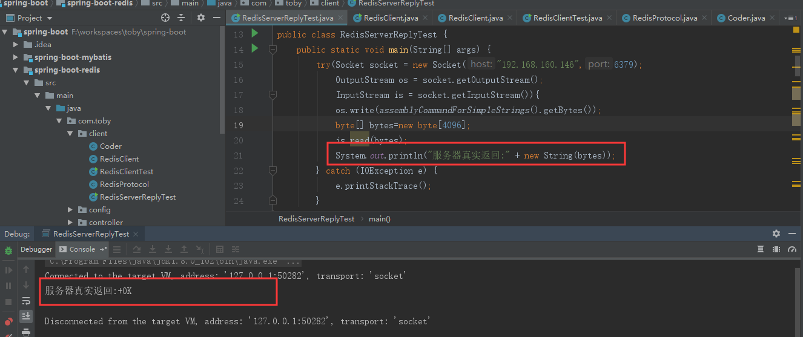
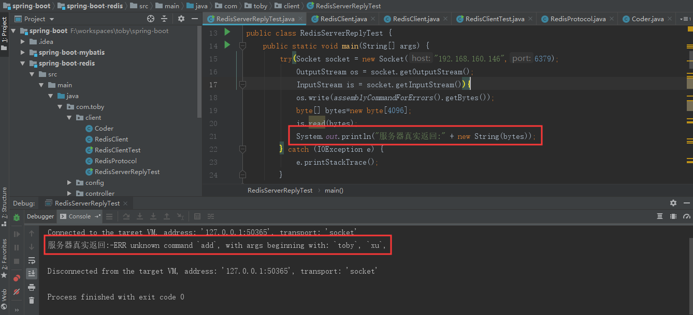
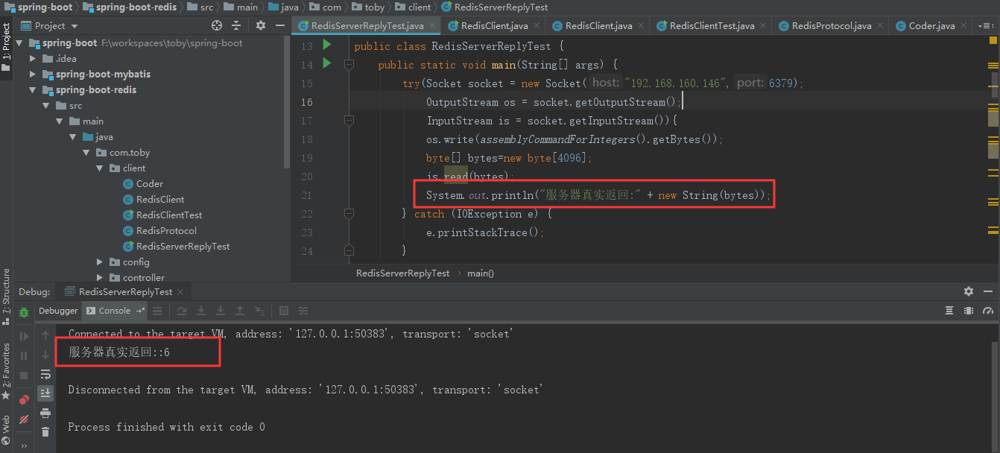
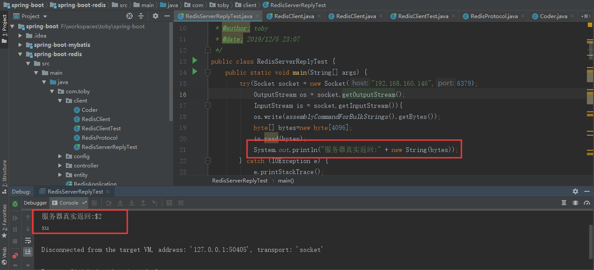
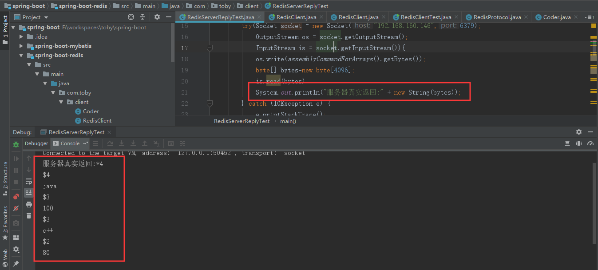
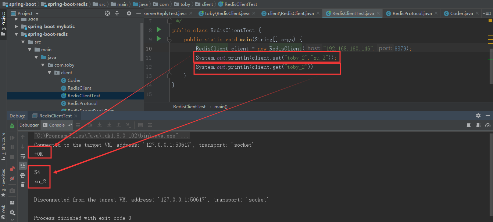

Redis是Redis序列化协议，Redis客户端RESP协议与Redis服务器通信。Redis协议在以下几点之间做出了折衷：
RESP协议在Redis 1.2中引入，但在Redis 2.0中成为与Redis服务器通信的标准方式。这个通信方式就是Redis客户端实现的协议。RESP实际上是一个序列化协议，它支持以下数据类型:简单字符串、错误、整数、大容量字符串和数组。
SET mykey myvalue
*3
$3
SET
$5
mykey
$7
myvalue
*3：SET mykey myvalue 这数组的长度
$3：表示下面的字符长度是3，这里是SET长度是
$5：表示下面的字符的长度是5，这里是mykey的长度
$7：表示下面的字符的长度是7，这里是myvalue的长度比如：向服务器发送"set toby xu"命令，实际上服务器的返回是:"+OK\r\n"

比如：向服务器发送"add toby xu"命令，实际上服务器的返回是:"-ERR unknown command `add`, with args beginning with: `toby`, `xu`,\r\n"

比如：向服务器发送"incr count"命令，实际上服务器的返回是:":6\r\n"

比如：向服务器发送"get toby"命令，实际上服务器的返回是:"$2\r\nxu\r\n"

比如：向服务器发送"hgetall toby_h"命令，实际上服务器的返回是:"*4\r\n$4\r\njava\r\n$3\r\n100\r\n$3\r\nc++\r\n$2\r\n80\r\n"

示例RedisServerReplyTest代码如下：
/**
* @desc: 测试服务器返回
* @author: toby
* @date: 2019/12/5 23:07
*/
public class RedisServerReplyTest {
public static void main(String[] args) {
try(Socket socket = new Socket("192.168.160.146",6379);
OutputStream os = socket.getOutputStream();
InputStream is = socket.getInputStream()){
os.write(assemblyCommandForArrays().getBytes());
byte[] bytes=new byte[4096];
is.read(bytes);
System.out.println("服务器真实返回:" + new String(bytes));
} catch (IOException e) {
e.printStackTrace();
}
}
/**
* For Simple Strings the first byte of the reply is "+"
* @return
*/
private static String assemblyCommandForSimpleStrings() {
StringBuilder sb=new StringBuilder();
sb.append("*3").append("\r\n");
sb.append("$").append("set".length()).append("\r\n");
sb.append("set").append("\r\n");
sb.append("$").append("toby".length()).append("\r\n");
sb.append("toby").append("\r\n");
sb.append("$").append("xu".length()).append("\r\n");
sb.append("xu").append("\r\n");
return sb.toString();
}
/**
* For Errors the first byte of the reply is "-"
* @return
*/
private static String assemblyCommandForErrors() {
StringBuilder sb=new StringBuilder();
sb.append("*3").append("\r\n");
sb.append("$").append("set".length()).append("\r\n");
sb.append("add").append("\r\n");
sb.append("$").append("toby".length()).append("\r\n");
sb.append("toby").append("\r\n");
sb.append("$").append("xu".length()).append("\r\n");
sb.append("xu").append("\r\n");
return sb.toString();
}
/**
* For Integers the first byte of the reply is ":"
* @return
*/
private static String assemblyCommandForIntegers() {
StringBuilder sb=new StringBuilder();
sb.append("*2").append("\r\n");
sb.append("$").append("incr".length()).append("\r\n");
sb.append("incr").append("\r\n");
sb.append("$").append("count".length()).append("\r\n");
sb.append("count").append("\r\n");
return sb.toString();
}
/**
* For Bulk Strings the first byte of the reply is "$"
* @return
*/
private static String assemblyCommandForBulkStrings() {
StringBuilder sb=new StringBuilder();
sb.append("*2").append("\r\n");
sb.append("$").append("get".length()).append("\r\n");
sb.append("get").append("\r\n");
sb.append("$").append("toby".length()).append("\r\n");
sb.append("toby").append("\r\n");
return sb.toString();
}
/**
* For Arrays the first byte of the reply is "*"
* @return
*/
private static String assemblyCommandForArrays() {
StringBuilder sb=new StringBuilder();
sb.append("*2").append("\r\n");
sb.append("$").append("hgetall".length()).append("\r\n");
sb.append("hgetall").append("\r\n");
sb.append("$").append("toby_h".length()).append("\r\n");
sb.append("toby_h").append("\r\n");
return sb.toString();
}
}我们现在了解了Redis的RESP协议，并且知道网络层上Redis在TCP端口6379上监听到来的连接，客户端连接到来时，Redis服务器为此创建一个TCP连接。在客户端与服务器端之间传输的每个Redis命令或者数据都以\r\n结尾，那么接下来我们自定义一个简单的Client。
/**
* @desc: 编解码器
* @author: toby
* @date: 2019/12/6 19:33
*/
public class Coder {
public static byte[] encode(final String str) {
try {
if (str == null) {
throw new IllegalArgumentException("value sent to redis cannot be null");
}
return str.getBytes(RedisProtocol.CHARSET);
} catch (UnsupportedEncodingException e) {
throw new RuntimeException(e);
}
}
public static String decode(final byte[] data) {
try {
return new String(data, RedisProtocol.CHARSET);
} catch (UnsupportedEncodingException e) {
throw new RuntimeException(e);
}
}
}/**
* @desc: Redis协议
* @author: toby
* @date: 2019/12/6 19:33
*/
public class RedisProtocol {
public static final String CHARSET = "UTF-8";
public static final byte DOLLAR_BYTE = '$';
public static final byte ASTERISK_BYTE = '*';
public static final byte PLUS_BYTE = '+';
public static final byte MINUS_BYTE = '-';
public static final byte COLON_BYTE = ':';
public static final byte CR_BYTE = '\r';
public static final byte LF_BYTE = '\n';
/**
* *3
* $3
* SET
* $4
* toby
* $2
* xu
* @param os
* @param command
* @param args
*/
public static void sendCommand(final OutputStream os, final Command command, final byte[]... args) {
try {
os.write(ASTERISK_BYTE);
os.write(Coder.encode(String.valueOf(args.length + 1)));
os.write(CR_BYTE);
os.write(LF_BYTE);
os.write(DOLLAR_BYTE);
os.write(Coder.encode(String.valueOf(command.name().length())));
os.write(CR_BYTE);
os.write(LF_BYTE);
os.write(Coder.encode(command.name()));
os.write(CR_BYTE);
os.write(LF_BYTE);
for (final byte[] arg : args) {
os.write(DOLLAR_BYTE);
os.write(Coder.encode(String.valueOf(arg.length)));
os.write(CR_BYTE);
os.write(LF_BYTE);
os.write(arg);
os.write(CR_BYTE);
os.write(LF_BYTE);
}
} catch (IOException e) {
throw new RuntimeException(e);
}
}
public enum Command{
SET, GET
}
}/**
* @desc: 自定义Client
* @author: toby
* @date: 2019/12/6 19:31
*/
public class RedisClient {
private String host;
private int port;
public RedisClient(String host,int port){
this.host = host;
this.port = port;
}
public String set(String key,String value){
try (Socket socket = new Socket(this.host,this.port);
InputStream is = socket.getInputStream();
OutputStream os = socket.getOutputStream()){
RedisProtocol.sendCommand(os,RedisProtocol.Command.SET,Coder.encode(key),Coder.encode(value));
return getReply(is);
}catch (Exception e) {
return e.getMessage();
}
}
public String get(String key){
try (Socket socket = new Socket(this.host,this.port);
InputStream is = socket.getInputStream();
OutputStream os = socket.getOutputStream()){
RedisProtocol.sendCommand(os,RedisProtocol.Command.GET,Coder.encode(key));
return getReply(is);
}catch (Exception e) {
return e.getMessage();
}
}
private String getReply(InputStream is){
try {
byte[] bytes = new byte[4096];
is.read(bytes);
return Coder.decode(bytes);
} catch (IOException e) {
e.printStackTrace();
}
return null;
}
}/**
* @desc: Redis Client 测试
* @author: toby
* @date: 2019/12/6 19:35
*/
public class RedisClientTest {
public static void main(String[] args) {
RedisClient client = new RedisClient("192.168.160.146",6379);
System.out.println(client.set("toby_2","xu_2"));
System.out.println(client.get("toby_2"));
}
}运行结果如下：

至此自定义的简单的Redis Client完成！！！！！！
通过本章的学习，了解了什么是Redis的RESP协议？Redis协议几个特点：简单的实现；快速地被计算机解析；简单得可以能被人工解析。有了协议，我们就可以通过自定义的Client想Redis服务端发起请求，从而进行操作Redis。对后面理解Redis客户端Jedis的实现原理有很大的帮助。